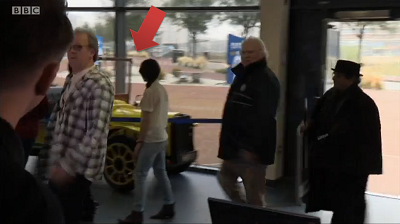
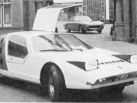

45 posts · 3966 views · started 2013-11-25 04:40 UTC
NI
Nielzabub
2013-11-25 04:40 UTC
#1
Warning: This thread will contain spoilers. If you haven't seen Day of the Doctor, you may not want to read this thread, althought chances of any reader being interested this thread who hasn't seen the special are small, I should still probably put that in.
The 50th anniversary special that Whovians have been waiting all year for has finally come and gone. What say the Whovian Sentinels forumites about this special?
I for one was quite pleased with Day of the Doctor. The use of multiple incarnations was more than just a gimmick and helped to expand the Doctor's character and take it in a new direction. Also, while the special was full of references, they weren't all mashed together and forced into the story. It was all very natural to the plot of what was going on.
The only negative thing I have to say is that I have no idea how to chornologically place Tom Baker's cameo. I guess it's possible that he's not the fourth Doctor in that scene, but it seems very unlikely. Oh well, maybe it'll be explained down the road.
TS
Theta_Sigma
2013-11-25 05:13 UTC
#2
Honestly, I had been worried about the anniversary, since the past couple of seasons have not been the most entertaining, in my opinion. Plus all the hype around it, felt like it was setting itself up for disappointment. But... I actually enjoyed it.
I'm liking the fact that we now have a plotline set up for later seasons. Very exciting.
The cameo I think might have been for its own sake, or maybe just a result of timey-wimeyness. Or some combination of the two.
PH
phantaskippy
2013-11-25 05:39 UTC
#3
I was pleased with it. I like the direction it is taking the series, and I absolutely loved the opening, with its quick tribute to the diffrerent openings.
I was happy with how they used Billie Piper, I was glad it wasn't another Rose comes back story.
Tennant and Smith were brilliant together, and Hurt fit right in. I honestly jumped up and down as soom as I heard Baker's voice. Just to have him come back to Dr. Who in that much of a role was great.
I'm not worried about how he fits into the story timeline. If they do more with it I'd be ecstatic, anything to get more of Baker in Dr. Who.
I was also thrilled to have them bridge the regeneration gap from McGann to Eccelston, actually showing McGann regenerate was awesome, and McGann's performance was the #2 best thing about the special, he was great, and even though the movie still is crap, I feel better about his being a cannon doctor after seeing him do justice to the role in that scene.
Overall it was very good, but when you start breaking down what it actually did for the series and the characters, it is amazing.
I really liked that they dealt with the personality shift for the new series in such a great way, tied up the Elizabeth drama so wonderfully and gave the series a point to turn and reinvent itself, which I think it needs if it is going to keep going strong. Also they are setting themselves up to break the limit on regenerations (the new doctor should be the last).
I'm going to stop now, I could write so much. The last thing it has accomplished is inspiring me to drag out my notes and try to complete the custom hero based on the second doctor (Troughton is still the best) that I started.
NI
Nielzabub
2013-11-25 06:10 UTC
#4
I suppose I should mention that I had no problem with Tom Baker being in the special. He is the face and heart of classic Who. If he's available for an anniversary special, he should be in it. I guess it doesn't really matter how he fits into the timeline, but if they work it out in later seasons, it would be awesome.
EN
Envisioner
2013-11-25 06:14 UTC
#5
I haven't followed the new show much, just seen a couple of isolated episodes (almost all from the Tennant era; I own the single Eccleston season and so that's the only part I'm really familiar with), but I did poke my nose into the Internet to see if I could find a showing for this episode. Unfortunately it doesn't seem as though any of the theaters over here are terribly keen on participating; I could only find one theater that mentioned it in my area, and there were no showtimes listed, so I guess this isn't something I get to particpate in. Still, the very idea of a theatrical release for a TV show episode is pretty cool, and I'm hoping it did well enough that such things may happen again. I've heard it said that the ossification of Hollywood has gotten so bad that many former cinema professionals are making a sort of mass exodus to cable television (eg: Lucy Liu in "Sherlock", though that's far from the best example)...I see this incident as potentially contributing to this movement, and I feel it can't help but be a good thing if it shakes up the status quo for the movie industry.
TS
Theta_Sigma
2013-11-25 06:36 UTC
#6
Off topic, but Lucy Liu is in Elementary, not Sherlock.
EN
Envisioner
2013-11-25 06:51 UTC
#7
Wait, those are two different shows? I only knew of one "Holmes in the modern day" show...is there a second, or is "Sherlock" a period drama?
MC
McBehrer
2013-11-25 07:07 UTC
#8
Sherlock is the only GOOD one. Elementary came along after and shamelessly copied it, and did a crap job with everything.
Anyway, the special was perfect. I was nerding out the whole time.
EN
Envisioner
2013-11-25 07:30 UTC
#9
Well imitation is the etc. etc. of flattery. I've seen one episode of Elementary and found it passably enjoyable, and don't care enough about Holmes to go out of my way to see the other one (or any more of the first one) for comparison purposes.
But yeah, Dr. Who. Up to a baker's dozen of them now, apparently? I swear I know the new guy's face from somewhere, but I'm not getting any hits on his filmography.
BL
BlueHairedMeerkat
2013-11-25 09:31 UTC
#10
Well he's been in Doctor Who before, so possibly from there? :D
Anyway, yes, I thought it was absolutely amazing, but if I start writing an essay on why I fear I'll never stop, so I shall leave my comment at that...
AM
Ameena
2013-11-25 18:47 UTC
#11
I also enjoyed the anniversary episode :). My partner's favourite Doctor is Tom Baker and at the end, when the Doctor was told that "an old man" calling himself "the curator" was looking for him, my partner went "It's Tom Baker!". How the hell he called that one I have no idea but he was very happy about that final scene just because Tom Baker was in it, lol. Anyway, looking forward to seeing what kind of a job Peter Capaldi does as the new Doctor. Also I suppose, the position of John Hurt as actually being Nine means that all the other Doctors (Eccleston onwards) have to shift along a number. So Matt Smith is actually Twelve, not Eleven. I suppose this makes his first episode's title (The Eleventh Hour) less of a pun that it previosuly was, and means that the song playing in David Tennant's first episode now has an innaccurate title (Song for Ten). Oh well. Now just to wait for the Christmas episode and see how the regeneration comes about (something to do with Trenzalore, it would seem)...
Also whilst mooching around on the iPlayer we found a thing called "The Five(ish) Doctors Reboot" I think, which was quite funny - Peter Davison, Colin Baker, and Sylvester McCoy trying to get in on the 50th Anniversary special :).
TS
Theta_Sigma
2013-11-25 19:04 UTC
#12
A fun thought. If McGann -> Hurt is a "real" regeneration, and with the one Tennant's Doctor cheated way back in series 4 (with the Doctor-Donna and all that), The Doctor's had 12 known regenerations. Clearly they're going to have to address the bit of Classic Series lore that says that's it for him.
Or they could ignore it. Always an option.
EDIT: Has regenerated 12 times, which would "normally" result in 13 versions of a Time Lord.
EN
Envisioner
2013-11-25 19:05 UTC
#13
From what I understand, the War Doctor is considered "stricken from the record", so he doesn't affect the numbering.
EV
EvanDan55
2013-11-25 19:06 UTC
#14
I hated the stupid ret con of "Oh, never mind, Gallifrey is still alive now. We fixed it. It's all better. Remember that huge moral decision that was key in making the new Doctors? Remember that horrible decision he had to make? Never mind it. It's not a problem any more. All that character development goes out the window."
I'm sick of Moffat treating the show like it's his own little fan fiction.
The special would have had a lot more impact and a lot more weight if they had pressed the button. But no, we got ret con.
MC
McBehrer
2013-11-25 20:36 UTC
#15
I disagree. It would have completely broken their characters if 10 and 11 pushed the button too, after all the angsting they've done about it. It's good that they got some closure out of it.
AR
arenson9
2013-11-25 20:56 UTC
#16
But Hurt's, Tennant's, and Smith's Doctors all have to live with having pusshed the button, because none of them remember what they've done except Smith's Doctor, who lived hundreds of years before that point anyway. The character development isn't lost. Hurt's doctor still had to make the decision to push the button. Eccleston's, Tennant's, and Smith's Doctors still have to cope with that decision, which they did in different ways over time.
Smith's Doctor is now able to move forward with the amazing experience of having fixed the worst moment in his history, but having also lived through four hundred years of dealing with that moment. What will that mean? Will he simply regress? Will there be some new way of looking at the universe that is the result of both having dealt with that horrible decision for four hundred years AND being able to fix it?
AR
arenson9
2013-11-25 20:57 UTC
#17
By the way, I think we should refer to Hurt's Doctor as either the 8.5th doctor or the non-Doctor.
PH
phantaskippy
2013-11-25 21:23 UTC
#18
I like Dr. Hurt for his title myself.
I understand the feeling about undoing the time war decision, and the whole "they won't remember it" is a bit of a cop out, but I think more than undoing the fabric of the new doctor it allows the show, after 104 episodes and specials of the new doctor, to evolve, and also to get back a little of the old doctor.
I can't wait to see what Smith does with his new leash on life, and I really think we'll see Capaldi bring back more of the old flavor mixed with the new in what I expect to be a refreshing new take on the series.
Eccelston was as much a trend setter as Troughton was, redesigning the flavor of the doctor and influencing so heavily those that followed.
Now we get a chance to do it again, to see what a Redeemed Doctor would look like.
I saw the Five(ish) doctors reboot, and that was incredible, the number of people he got to sign on for it was great, and it was really well done. The interplay with Peterson CBaker and McCoy was wonderful. I miss those guys, I'm going to have to do a little 5-7 marathon now.
As for counting regenerations, Tennant played around with the regeneration rules a lot, but I believe he only counts as one. That would make Capaldi the thirteenth. I think (like the master before him) the Doctor will receive a new set of regenerations after saving Gallifrey.
I think that is the impetus for the whole save Galifrey story line, to break the regeneration count without breaking canon. It is interesting that right as they run into the cap they let everyone know that the only people who can extend the doctor's life past Capaldi are not dead after all.
ME
Mezike
2013-11-25 21:26 UTC
#19
Trivia time!
You see that car?
My dad's cousin built that car. I have an old photo somewhere with my brother as a toddler standing on the seat.

PH
phantaskippy
2013-11-25 21:27 UTC
#20
Seriously Mezike? That is freaking awesome, I loved that car. Pertwee went down hill when they introduced that dumb hovercar thing.
ME
Mezike
2013-11-25 21:43 UTC
#21
Yep. He used to produce under the SIVA brand in Dorchester (South of England). The best known model was the Spyder, which had a Matchbox die cast made after it. Gull wing doors, pop up headlights, and a (then) throaty 1.6 VW engine. What's not to love?!
Here is a YouTube clip featuring one of his cars, a pseudo Edwardian roadster: http://www.youtube.com/watch?v=cRusuZsxijY

RA
Rabit
2013-11-25 21:59 UTC
#22
Personally, this is just the continuing thread of Moffat trying to fix much of what Davies put into the rebooted series. Davies made it darker, put the Doctor in an angry place, and over-exposed the Doctor in the universe (multiverse?!). It was fun, don't get me wrong, but you can't keep outdoing yourself when it's gotten that big. This was just another step in that process - I think we're going to see some great stuff moving forward.
Which I'm really hoping for, 'cuz the second half of this past season really was the worst of the rebooted series to date.
MC
McBehrer
2013-11-25 22:01 UTC
#23
WHAAAAAT? No... Nightmare in Silver was great, and Name of the Doctor was fantastic!
MC
McBehrer
2013-11-25 22:03 UTC
#24
Maybe the term I'd use is least-best. It may be less good than the others, but it's still not bad.
PH
phantaskippy
2013-11-25 22:17 UTC
#25
I agree Rabit. The whole, this episode is bigger and more epic than the last shtick got old quick, and the last season has been a drag as they built up to more epicness.
I loved when they reset and had no one know about the Doctor, but they didn't really do much with that. I was hoping they would transition from every episode being a huge galatic conflict, or the newest super villain to want the doctor dead, and go back to the stories where the doctor meets interesting people and solves their little problems.
I'd love to see them develop the stories more (yes I'm an old school Who fan and love the 4-6 episode arcs, those would be two or three in the new format, and two episodes to a story would give a lot of time to develop characters and stories more than just run around really fast and point your screwdriver at stuff. (anyone else LOVE Hurt telling them off for doing that?)
I liked the old plots where the problems of the first two episodes weren't the real issue at all, where the Doctor and friends had to deal with people not trusting them while the Doctor was trying to save them. Times before a screwdriver could solve all the worlds problems and a sheet of paper would convince anyone you were OK.
I still love Dr. Who, but I'm a cranky old 34 yr. old man, and I like the doctor that was on TV a decade before I was born.
NI
Nielzabub
2013-11-25 23:43 UTC
#26
I can understand a lack of enthusiasm for the second half of series 7, but I still liked it. The introduction to Clara was interesting and mysterious, and I was genuinely interested in the character. And at least we have a companion who's fun again. Clara is charming and entertaining and doesn't brood all the damn time. Moffat has proven his chops for storytelling, and I'm willing to put up with a mediocre season if it leads to something fantastic, which it looks like it will.
Edit: Got a bit ahead of myself with the season numberings.
PH
phantaskippy
2013-11-26 00:43 UTC
#27
+1
EN
Envisioner
2013-11-26 00:54 UTC
#28
Angst was never really the Doctor's shtick in the old series. Davies decided to go in that direction for a while, and it worked. But going back to a lighter tone for a while is perfectly reasonable. After all, what good is it being a time traveler if you can't fix your past (or future) mistakes?
I'm sick of Moffat treating the show like it's his own little fan fiction.
Oh like you or anyone else would do otherwise if given the chance.
8.5?
But yeah, I second the poster who suggested Dr. Hurt. After all, he's the "War Doctor". "My prescription? PAIN!!!"
SI
Silverleaf
2013-11-26 00:58 UTC
#29
It seems that I'm the only person in the world that didn't watch this...
EN
Envisioner
2013-11-26 01:14 UTC
#30
I didn't either, I'm just discussing it based on rumor and hearsay.
BR
Braithwhite
2013-11-26 15:34 UTC
#31
I rather liked that Hurt (as the War Doctor) set up Eccleston's Doctor as the one immediately after the time war. It always felt to me that Eccleston was the most "raw" emotionally- really quick to anger, cheer, regret, melancholy, and the most mercurial in his decisions. (He was also where I started watching the show- I've seen a few of the old ones, but all of the "new" ones). Then it moved to Tenant, who was starting to live again, but could still be brought ot some very dark places. Then Smith, who alternated between brooding and carefree. It seemed like his incarnation of the Doctor was trying his level best to forget his past- except that it kept catching up to him in the shape of all his enemies and past decisions.
I thought the Day of the Doctor was an excellent story of the three perspectives, and how they became each other.
PH
phantaskippy
2013-11-26 15:56 UTC
#32
I loved Eccelston as a transition from the old days to the new. He successfully channelled the older doctors at various times, and was believable as a man that had lived all of the previous stories.
Tennant did a lot of Davidson-esque seriousness and running, and Matt Smith was the closest we've seen to replicating the Troughton era, at least his early stuff.
EN
Envisioner
2013-11-26 16:39 UTC
#33
I have only ever seen TBaker and the new doctors, and I know CBaker and Pertwee by reputation. What were Troughton and Davidson like?
PH
phantaskippy
2013-11-26 21:03 UTC
#34
Hartnell, the first doctor was a grandfatherly curmudgeon with intelectual superiority, he talked down to people, even though he cared about them. He was always in charge, never afraid to get into trouble, rarely backed down and always was tinkering in somebodies lab, or spouting facts.
Troughton turned the role on its head by playing a space hobo. He was he first "mad man in a box" and brought the "never has a plan but always figures it out in the end" attitude to the role. He also played a recorder, it helped him think. He had the best companion team (Jamie and Zoe) in the show's history. How can you go wrong with a scott in a kilt and a girl who blows up super computers for fun?
Davison (Spelling Error Has Been Exterminated, Daleks Are Masters Of The Edit!) had the unenviable position of following Tom Baker, and he struggled early on, like the show didn't know how to move forward with him. He had a celery tucked into his jacket and he was a cricket player. He had a ton of companions (up to four at once) and was much darker than his predecessors. His final few story arcs were brilliant, and it seemed like he came into his own right as his time ended.
MC
McBehrer
2013-11-27 00:25 UTC
#35
Davison*
And although he was really dark, he was also one of the most compassionate and caring Doctors as well. He's 10th's favorite incarnation.
AR
arenson9
2013-11-27 03:25 UTC
#36
That's what happens when you marry someone's daughter. Or did it go the other way?
David Tennant living the ultimate nerd boy fantasy. He loved Doctor Who as a kid, and not only got to be the Doctor but is married to the daughter of his favorite Doctor, thus becomming that Doctor's son in law.
MC
McBehrer
2013-11-27 04:02 UTC
#38
No, I mean he's the 10th DOCTOR'S favorite incarnation. Not David Tennant.
NI
Nielzabub
2013-11-27 04:07 UTC
#39
I don't know if there's anything official, but there are assumptions that Peter Davidson is Tennant's Doctor given that he was the one who came back for the Time Crash special. It might also just be because he's the only classic Doctor who's still in shape and actually resembles the Doctor he played.
TS
Theta_Sigma
2013-11-27 04:25 UTC
#40
Pretty sure it's in one of the Confidentials that Tennant specifically modelled his Doctor after his favourite, Davison's Doctor.
PH
phantaskippy
2013-11-27 06:10 UTC
#41
Yes, Tennant modeled his character after Peter Davidson, and Matt Smith after Troughton.
Capaldi when he was announced did the hands on his lapels like Hartnel used to do all the time when he was thinking and being triumphant. I hope that is not just me reading into things, but a sign that Capaldi is looking to Hartnell for inspiration. I would be pleased.
NI
Nielzabub
2013-11-27 06:36 UTC
#42
I had known about Smith and Troughton. Smith even modeled his costume after Troughton's with the bowtie. A throwback to Hartnell would be fun especially considering that Capaldi is the first old guy to the play the Doctor for quite some time.
EV
EvanDan55
2013-11-28 05:57 UTC
#43
I feel like it would have been way stronger if Tennant and Smith had to come to terms with their actions by pressing the button. It would have been way more satisfying to me if we had seen The Doctor(s) stick to his/their original decision and face the fact that, sadly, people have to die sometimes. I know he has dealt with that problem before, but I would have rather seen him face the reality of being completely alone with no other timelords being in any other universe, like Tennant had to deal with when the Master died. It seems like that's what they've been going for with the reboot. They bring up his loneliness a lot, so I figured they'd want to keep that a motif.
Other than that, I loved the special and everyone's interaction in it. I only had a problem with the ending. Now I want to see more of John Hurt. Can't we get a War Doctor miniseries?
NI
Nielzabub
2013-11-28 06:05 UTC
#44
I was okay with the Gallifrey retcon partly because it is consistent with how time has been working since series 4. In the Library two parter we are presented with what looks like a fixed point that results in River's death, but in that same set of episodes we learned that the Doctor had been thinking of a way to save River for years. It is because of the older Doctor thinking of a way to save her, that she got uploaded into the computer. In a way, she still died and the fixed point was satisfied, but the Doctor still managed to get a happy ending of sorts.
We see this again in the finale to the seventh series. Again, the Doctor's death is supposed to be a fixed point in time, but he manages to cheat it in a way that the event still happens, just not the way everyone thinks it does.
The resolution with what happened to Gallifrey is actually very consistent with what the show's been doing. The Doctor has become very good at getting around hopeless fixed points in time, and he does it in a way that fixed point is satisfied, but the result ends up being slightly different from what was expected or originally thought.
AM
Ameena
2013-11-28 13:29 UTC
#45
And anyway, Fixed Point makes everything indestructible, right? ;)